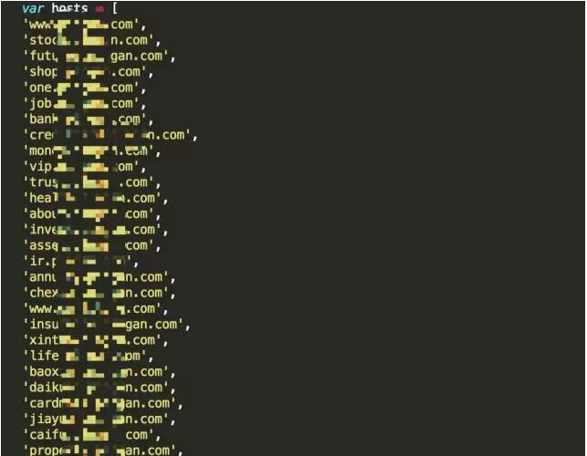

今天给大家分享一下逻辑漏洞的挖掘方法，现在越来越多的网站，尤其是大一点的，由于白帽子的蜂拥而至，大量的明显漏洞已经被修复的差不多了，只有零碎被初来乍到的白帽子挖了出来，大多都是些反射跨站、少量信息泄露等、虽然这种漏洞没多分，但是还是觉得没白挖，毕竟确认了。
逻辑漏洞成为了众多白帽子的新目标，莫名的逻辑漏洞这个方向成为了白帽子的方向，挖这类漏洞很多白帽子觉得无从下手，有可能是经验还不是很多，不过没关系，继续坚持挖一下看看。
记得我第一个严重的漏洞就是一个逻辑类漏洞《网易任意邮箱密码重置漏洞》，说起这个漏洞，就觉得莫名的兴奋，因为这个漏洞是我不经意发现的，因为当时我经常使用网易邮箱，在注册账号的时候，突然跳出一个链接，让我绑定手机号，这时候我注意到，好想上面URL中包含了我的邮箱地址，潜在的心理意识告诉我试着改改邮箱地址，然后输入自己的手机号看看能不能正常接收短信，小手就这么一点，叮！短信来了！输入短信后成功跳转到我想要绑定的邮箱中，这时候我意识一个涉及到行业的漏洞来了，心里又兴奋又激动又担心又着急，担心的是怕这个漏洞被恶意利用，着急的事我那会并不认识网易内部做安全的，没办法联系到，尝试着网上找然而并没有什么卵用，后来在朋友的介绍下把漏洞提交到了WooYun漏洞平台，很庆幸，这个漏洞在漏洞提交的当天晚上就被紧急修复了，同时我也认识了网易Src做安全的朋友。
为什么我说是一个行业漏洞呢，因为当时国内邮箱使用网易邮箱是最多的，网易公布2012年邮箱用户破5.3亿，也就意味着各大网站、各大电商、包括网易自己的各种业务也遭受了影响，这个漏洞可以直接重置网易各种邮箱密码（包括企业邮箱、188、126、163等），通过密码找回间接重置各大网站密码等，危害还是相当大的。
这个漏洞从百度搜WooYun莫名找到我的人还挺多的，因为当时为了找到网易做安全的朋友我在上面留了我的QQ号等信息，其中有个人说他买的30万手机卡作废了，说我把漏洞提交了。
为此我收到了网易寄来的礼物，虽然不贵重，但是我还是心理挺高兴的，毕竟漏洞被修复了，做出了我的贡献。
网易邮箱密码重置漏洞URL，大家可以自行参观，不用谢，不客气。 http://www.secbug.cn/bugs/wooyun-2012-08307.html
逻辑漏洞挖掘经验我总结了以下几点：
1、打开网站，先观察，先了解网站的各种功能，知彼知己，方而漏洞多多。
2、初步试着先使用这些功能，如果你使用浏览器，记得把审核元素打开，小心认真的观察点击功能点的时候网络中的各种请求，注意POST数据，因为它提交的数据是隐藏的，没那么直观，所以这个时候要小心，说不好一不小心你也可以挖到一个大漏洞。
3、当你初步认识到功能点之后，你就可以进行下一步了，使用BURP抓包，试着将其中的数据在BURP中重放，如果发现重放数据返回的包中有敏感信息的话，可以进一步修改其中的值进行重放，我一般进行的是加1减1操作（意思就是将其中的数值减1或者加1）看是否可以获取不同的信息，如果获取的信息不相同，且信息比较敏感，这就意味着你有可能找到一个逻辑漏洞了。
补充：不一定每个数据都要重放，可以指定某个重要请求数据进行重放。
4、不要觉得JS不重要，有时候里面也暗藏宝藏，有的很多比较敏感或隐蔽的网站都在里面。这类信息，会让你找到其他你找不到的网站系统。一般比较隐蔽的系统存在的逻辑漏洞也是很多的。有的时候看JS逻辑结构就知道有没有逻辑漏洞。
比如会出现这样的信息：

5、重点将逻辑漏洞挖掘放在重要区域，比如：个人信息区域、密码修改区域、密码忘记区域、支付区域、手机号区域等。这几个区域一般都是严重高危漏洞的始发点，任何一个地方出问题，都有可能造成企业、用户损失。
6、别害怕验证码，有的白帽子遇到验证码就退缩了，其实不然，有的验证码是给人看的，只是防止用户手工输入的，然而并不防止重放请求来暴力破解，有的验证码是给服务器看的，当验证码没有一个完整的服务请求时，验证码是不会改变的，这个时候我们也可以用来进行暴力破解，还有一种是第一次请求包验证了验证码是否正确，第二次请求就不需要验证了，知道接口的话就可以直接进行破解了，利用成功的话，这个地方也会出现惊人的发现，例如：敏感信息泄露等。
7、加签名，加TOKEN等方法，看着好像挺安全，其实也会出现问题，当第一次遇到这种请求中带签名，带TOKEN的时候，就可以思考一下，在重点功能处是否可以使用BURP修改替换原先值，生成一种新签名，新TOKEN的请求数据，然后在BURP中进行重放，看是否成功来绕过加签名、加TOKEN等方法，成功了就意味着宝藏来了。
8、手机短信，大多白帽子遇到手机验证码是4位的时候，都觉得挺高兴，觉得这个地方可以破解重置啥的，其实有时候越到6位的时候也不用害怕，因为这个地方也会出现问题。
例如：
第一种是发送短信请求数据响应中自动包含验证码；
第三种发送验证码的手机号可控，比如密码重置发给别人验证码也可以重置你的密码，服务器只判断手机对应的验证码是否正确，不判断是不是你的手机号。
第四种验证码发送可控，想往你手机号发啥验证码就可以发啥验证码；
第五种验证码概率学问题，你收到过111111、111112、111122等这样的验证码吗，那么我们写脚本去除这类验证码还能剩多少呢？这样可以增加我们破解成功的几率。
9、注册页面、密码找回、个人信息页面等都有可能存在逻辑漏洞，
例如：
我们填写完第一步后可以直接跳转入注册的最后一步，中间的必填项就可以被绕过；
我们密码找回在第一步填入用户信息后可以直接跳转入密码重置页面重置用户帐号；
在个人信息处改变用户ID值直接查看其他用户信息等。
总结一下：
一句话，没有你做不到，只有想不到，到处都是洞，放手一搏。
原文地址：http://www.secbug.cn/archives/logic-vulnerability-mining/ 来源公共号：secbugs
评论一下：
其实现在我们可以展开的还有：硬件设备如操场上的售卖机、电影院的取票机、电影院的箱子ktv等等，甚至你可以去测试大连街道上的避孕套投币机；此外我们也可以测试一些只能设备，虽然他们很多有的是通过蓝牙的；我们还可以测试app，毕竟这也是一个潮流......